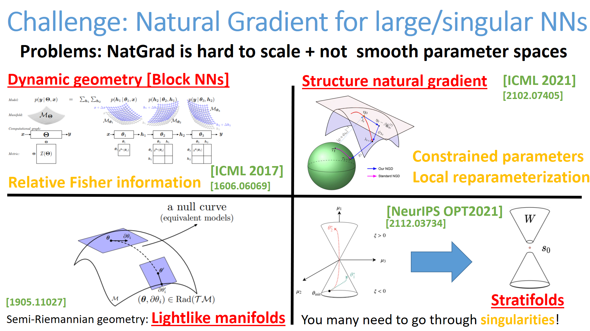
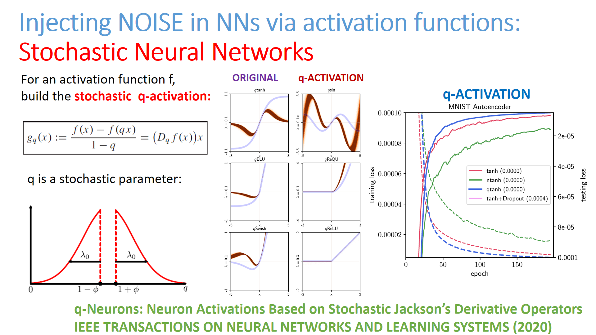

Deep learning and Information Geometry
RG=ResearchGate
CoLab=Google Colaboratory

- [ICML PDF]
Tractable structured natural-gradient descent using local parameterizations,
arXiv:2102.07405
Structured second-order methods via natural gradient descent
-
[NeurIPS OPT 2021 workshop]
Towards Modeling and Resolving Singular Parameter Spaces using Stratifolds
-
[UAI PDF]
arxiv Sinkhorn AutoEncoders, UAI 2019.
-
[IEEE TNNLS]
arxiv q-Neurons:
Neuron Activations based on Stochastic Jackson's Derivative Operators, IEEE TNNLS 2020.
CoLab

-
[Neural Computing and Applications ]
RG
Anticipation-RNN: enforcing unary constraints in sequence generation,
with application to interactive music generation, Neural Computing and Applications, 2018.
- [IEEE SSCI]
arxiv GLSR-VAE: Geodesic latent space regularization for variational autoencoder architectures, IEEE Symposium Series on Computational Intelligence 2017
- JMLR proc DeepBach: a Steerable Model for Bach Chorales Generation, ICML 2017
arxiv DeepBach: a Steerable Model for Bach Chorales Generation.
- JMLR proc Relative Fisher Information and Natural Gradient for Learning Large Modular Models, ICML 2017.
arxiv
Relative Natural Gradient for Learning Large Complex Models, 2016
Web page
-
Lightlike Neuromanifolds, Occam's Razor and Deep Learning
- q-Neurons: Neuron Activations Based on Stochastic Jackson's Derivative Operators
- arxiv Deep rank-based transposition-invariant distances on musical sequences, 2017